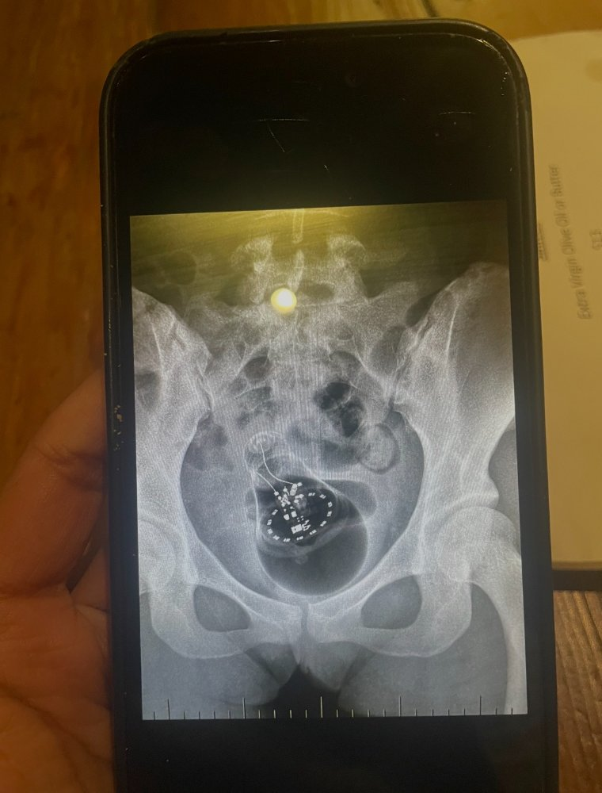

The title pretty much sums it up neatly.
For the past few years I have been focusing on personal growth and family without carving out much time for dating, mostly because I have not found any need to. I think I am equal parts troll and flirt, and that particular combination is not exactly compatible with a serious long term relationship. I am just deeply unserious about courtship these days because the value proposition from a boyfriend feels net-negative after having a very hyperactive twenties that already hit the big milestones like engagement, marriage, and children. So at the ripe old age of twenty nine I am basically experiencing a midlife crisis.
In spite of my glaring self awareness, I told myself earlier this year, “You are about to turn thirty. You need to close out your twenties with a fucking bang.” Double entendre intended.
So I did. It took me three months. And it was not even with the person I had initially mentally prepared to explore my sickest fantasies with. That particular disappointment was the predictable byproduct of prolonged romanticization. You finally get to know someone and they simply do not live up to the cinematic trailer you produced about them in your own head. It just no longer seemed like he’d be the perfect candidate to spit in my mouth. It is a uniquely heartbreaking moment when you realize someone you thought was eccentric and special is actually designed for mass appeal.
I knew if I was going to do this I would have to stop overthinking.
A few weeks ago when I was in New York, I found myself eating tapas and working through my third glass of red wine, possibly more, when I noticed this gorgeous man who looked like he had been transported directly out of a Ralph Lauren equestrian shoot. He was wearing a tan and black Zegna number with a scarf in that effortless way Europeans seem to manage without looking like they tried. My eyes immediately searched for his ring finger. No ring. Amazing.
He sat down and we made eye contact for a split second. I asked the server to send him an espresso martini with my number written on a restaurant napkin. Subtle, but also not subtle at all.
We texted and had dinner the following night and I learned that he was also just visiting New York. He was thirty five and European. Of course. I am never attracted to Americans. Even subconsciously it seems.
The conversation flowed easily until he casually mentioned that he was a tech founder in Europe. I felt like someone had punched me in the gut and yanked the floor out from under me when he started talking about his Series E. I did not have the emotional stamina to date someone in tech after my gay ex. I still felt mildly traumatized by listening to conversations about cap tables and term sheets. This was not and never will be my world.
But that was not this guy’s fault. Nor was it his problem. I decided to act like a mature adult and keep an open mind. We ended up having a great night out together and were practically inseparable for the rest of the weekend. At one point I had to physically will myself not to reply to his texts immediately. Three years of celibacy and suddenly I was engaging in emotional warfare with my own phone.
Then I said fuck this aloof, playing hard to get games and invited him to my friends’ Aspen trip.
I fully expected him to say no since his trip to the US was already stretching longer than planned, but to my surprise he rearranged everything and said yes. He took charge of the entire trip for both of us in this very traditional, alpha masculine leadership style where he decided things for me. Just like how he orders for me when we eat. I hate to admit it, but it was extremely hot.
Anyway, once we arrived we had some downtime and decided to get a couples massage to decompress from the flight and the altitude adjustment.
After the massage I had what felt, at the time, like a brilliant idea. A truly groundbreaking idea.
I suggested we have sex in the steam room.
So we went in, did our thing, and as I was getting up afterward I must have gotten lightheaded from the heat or the exertion or possibly both. I tripped on a small step on my way out and fractured my fibula.
I was naked.
An ambulance transported me to the ER while I sat there wrapped in my spa robe trying to process my life choices. That was not even the worst part.
The worst part was that the last time I had been at this exact ER in Aspen, I had arrived under slightly different but equally humiliating circumstances. During a previous relationship, my ex had accidentally placed a lightbulb in my uterus during foreplay and it became lodged there. I had to be sedated with propofol so the doctors could remove it without it shattering.

When I arrived this time the same triage nurse handled my intake.
I remembered him because he was this flamboyant gay from New York. We chatted last time because I was too embarrassed to tell him the reason for my ER visit and kept saying it was abdominal pain until he had to pry the truth out of me by reassuring me that he had seen it all while working triage in New York City. Then after I told him, he had to work overtime to contain his laughter. Clearly he hadn’t seen everything.
He read my file, looked up at me, and casually mentioned the lightbulb incident right in front of my new concerned lover.
He remembered me.
So now I am sitting here in a walking boot reflecting on the fact that I broke my three year celibacy and my leg within the same twenty four hour period. Which feels symbolic in a way I have not fully unpacked yet.
Anyway, all things considered, I think the universe is telling me something.
I am just not entirely sure if the message is “don’t have sex,” or “stay out of Aspen.”